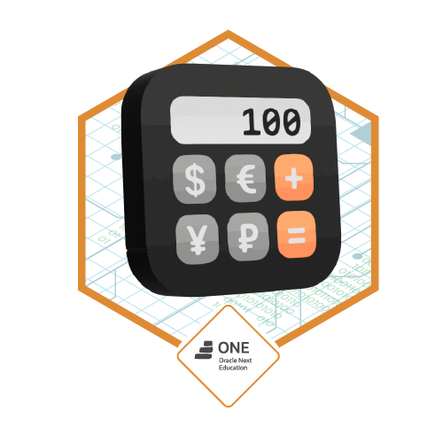
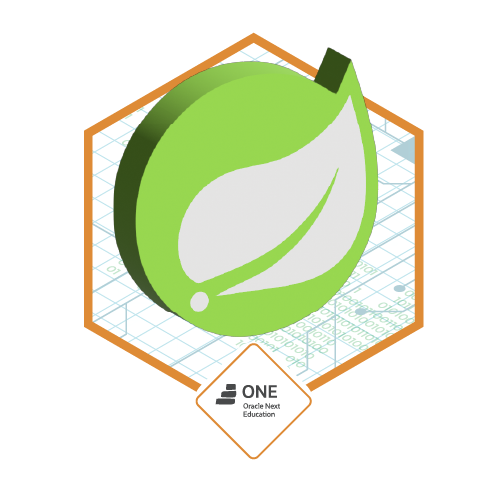

// my_projects
Mis Proyectos
Repositorios públicos cargados en tiempo real desde GitHub
Conectando con GitHub API...
Construyo experiencias digitales excepcionales que combinan código limpio, diseño intuitivo y soluciones escalables. Del concepto al deploy, cada línea de código cuenta una historia.
const developer = {
nombre: "Tu Nombre",
rol: "Full Stack Dev",
stack: [
"React", "Node.js",
"Python", "PostgreSQL"
],
pasión: "Código limpio 🚀",
disponible: true
};La historia detrás del código
Hola 👋 Soy Rubén Azócar Daroch, un desarrollador Full Stack con sólida formación técnica y una profunda pasión por transformar ideas en productos digitales de alto impacto.
Mi camino en el desarrollo web comenzó con la curiosidad de entender cómo funcionan las cosas y hoy me dedico a construir aplicaciones robustas, escalables y centradas en la experiencia del usuario.
Creo firmemente en que el código limpio no es un lujo, es una responsabilidad. Cada proyecto es una oportunidad de aplicar buenas prácticas, aprender algo nuevo y dejar una huella positiva en el ecosistema digital.
Repositorios públicos cargados en tiempo real desde GitHub
Conectando con GitHub API...
Herramientas y tecnologías que domino
Formación continua que respalda mi trabajo
Formación intensiva en tecnologías frontend y backend con enfoque en proyectos reales.
Certificaciones individuales que componen el certificado profesional de Google
Reconocimientos por proyectos completados en el programa Oracle Next Education

Aplicación Java con consumo de API externa para conversión de divisas en tiempo real.
Java · API RESTCatálogo de libros con integración a la API Gutendex, persistencia con Spring Data JPA y PostgreSQL.
Spring Boot · PostgreSQL
Foro RESTful con Spring Boot, autenticación JWT y documentación con Swagger / OpenAPI.
Spring Security · JWT
Aplicación web interactiva con JavaScript para sorteo de "Amigo Secreto" con lógica aleatoria.
JavaScript · HTML/CSSPalabras de colegas y colaboradores
Los testimonios son revisados por Rubén antes de su publicación.
¿Tienes un proyecto en mente? Estoy listo para el desafío.
Estoy disponible para proyectos freelance, colaboraciones o posiciones de tiempo completo. Si tu idea necesita un desarrollador que se preocupe por la calidad y los detalles, hablemos.